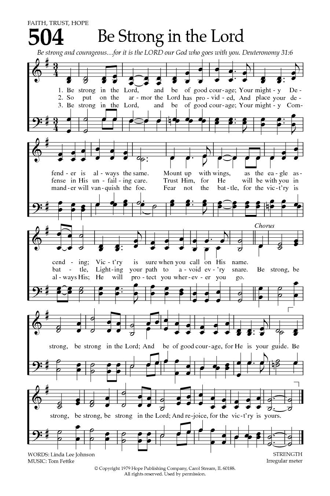

|
Be strong in the Lord and be of good courage Author: Linda Lee Johnson (1979) Tune: STRENGTH |
【靠主剛強】 |
|
1 Be strong in the Lord, and be of good courage; |
靠主得剛強，靠祂大能大力， |
|
https://hymnary.org/hymn/BH2008/504
 |
|
|
|
|

- Printable scores: MusicXML
- Audio files: MIDI
-
Be Strong in the Lord (靠主剛強)
w/ subtitles in 7 languages
-
Be Strong in the Lord - Lyrics
-
Be Strong and of Good Courage" - Hour
of Power Choir
Be
strong in the Lord and be of good courage
Johnson, Linda Lee
1947- /
FETTKE
https://hymnary.org/person/Johnson_LL
JOHNSON, LINDA LEE (b. 1947) was born in
Seattle, Washington, and has lived on the West Coast most of her life. She
attended Chabot College in Hayward, California, and now lives in Castro Valley,
California, with her husband Bruce, superintendent of Redwood Christian Schools.
Linda works at the school's district office as a part-time secretary. She has
two grown children and three grandchildren. She began writing lyrics in 1978,
working primarily with composer Tom Fettke. The words to "Be Strong in the Lord"
were written on a plane flight to her grandfather's funeral, and Tom set the
song first as an anthem and later as a hymn. It can be found as hymn #514 in
Hope's new hymnal WORSHIP & REJOICE (2001).
https://www.hopepublishing.com/1101/
Texts by Linda Lee Johnson (6)
Linda Lee Johnson (1)
提后2:1-3：靠主剛強
經文：提后2:1-3
在信仰的道路上，有時我們會軟弱，我們會懷疑到底我們的堅持值得嗎？到底我們的堅持是會有好的結果嗎？
服事面對困難
提摩太在服事的道路上也遇到許多的困難，有人反對他，有人進行破壞的工作。這使提摩太很灰心。有時我們在服事上帝的過程中，也會遇到類似的情況。有些人不明白自己服事上帝的心，有些人誤會自己，有些人毀謗自己，這使自己的心裡有許多的苦楚。所以，我們有時覺得放下一切，不在教會服事上帝比較好。
可是，保羅卻鼓勵在低谷中的提摩太。保羅說到自己也曾面對反對他的人，離棄他的人。可是，保羅卻定睛在那些願意與上帝同心，也與他同心的人身上。這些人就鼓勵了保羅從低谷中站起來，繼續為主奮戰。
靠主耶穌基督的恩典剛強
因此，保羅也鼓勵提摩太，要靠著主耶穌基督的恩典剛強起來，不要被服事的困難打倒。那什麼是耶穌基督的恩典？那是指拯救的恩典。那耶穌基督的恩典如何可以剛強我們？保羅在面對困難的時候，就常常想起自己是一個罪魁，可是卻被拯救。這樣的呼召常常鼓勵了他，剛強他繼續服事上帝。所以，保羅也要提摩太想起自己是如何被呼召，如何被按手，以致可以被上帝的拯救恩典剛強起來。
當我們的婚姻發生情況時，我們也能夠因為想起在上帝面前的立誓而重新剛強起來，修復彼此的關係。當我們的孩子發生問題而想放棄時，要想起孩子是上帝賜給我們的產業，以此來鼓勵自己，上帝會保守和看顧。當自己的公司有問題時，要想起自己的公司是已經獻給上帝使用的，上帝必負責到底，以此來剛強自己忍耐奮戰。所以，讓我們軟弱的不是困難，而是我們不倚靠上帝的心。不倚靠上帝的心使我們失去盼望。只要我們繼續倚靠大能的上帝，我們就有盼望和力量，我們必能走出困境，就如保羅、提摩太，或是許許多多倚靠上帝的人一樣。當我們願意這樣來倚靠上帝的時候，我們就是一個對上帝忠心的人。
那被耶穌基督的恩典剛強的我們要做什麼呢？有兩件事。
忠心教導
第一件事是，保羅要提摩太把上帝的福音和話語去交託和教導那些也是與提摩太一樣忠心的人。而這些忠心的人也是可以把所領受的去教導別人的人。所以，我們不單自己要忠心，我們也要把我們所忠於的上帝和上帝的話語教導給那些忠心又能教導別人的人。在家庭，就是把我們所領受的教導給我們的孩子；在教會，就是去栽培弟兄姐妹，讓他們成長，讓他們成為教會的接班人；在工作的場所，就是去栽培員工，讓他們的生命成長。當提摩太這樣做的時候，他就可以解決教會的問題，因為大家都朝正確的方向成長。當我們這樣做的時候，我們的家庭、教會、職場和國家，也會朝正確的方向前進。所以，我們不要被動地被困難困住，被動地只是去處理問題，而是主動地栽培和教導，以致可以訓練更多人朝正確的方向行進，成就更多更好的服事。那所面對的問題就可以一一迎刃而解。
預備受苦
第二件事是，在做栽培和教導的過程中，或是剛強後的服事，我們會繼續遇到困難，所以，保羅要提摩太預備受苦，就如保羅受了許多的苦一樣。保羅雖然受了許多的苦，但卻成就了上帝所交託的使命。這就是基督耶穌的精兵的特質，專心一意地預備受苦，在受苦中繼續前進奮戰。可是，預備受苦卻不是我們一般的想法，因為我們一般的想法是趨吉避凶。若我們常常想趨吉避凶，那我們可能就無法勝過困難，因為我們沒有預備要奮戰，那當然就無法勝過困難，也無法經歷上帝大能的拯救恩典。所以，預備受苦使我們更倚靠上帝，也更有盼望和力量地向前行。
在困難中，我們為什麼可以繼續堅持呢？因為上帝是信實的。上帝既然透過耶穌應許說「在世上你們有苦難，但你們可以放心，我已經勝了世界」，那我們就可以因為上帝的信實而得力量和盼望，忍耐到底，完成使命。